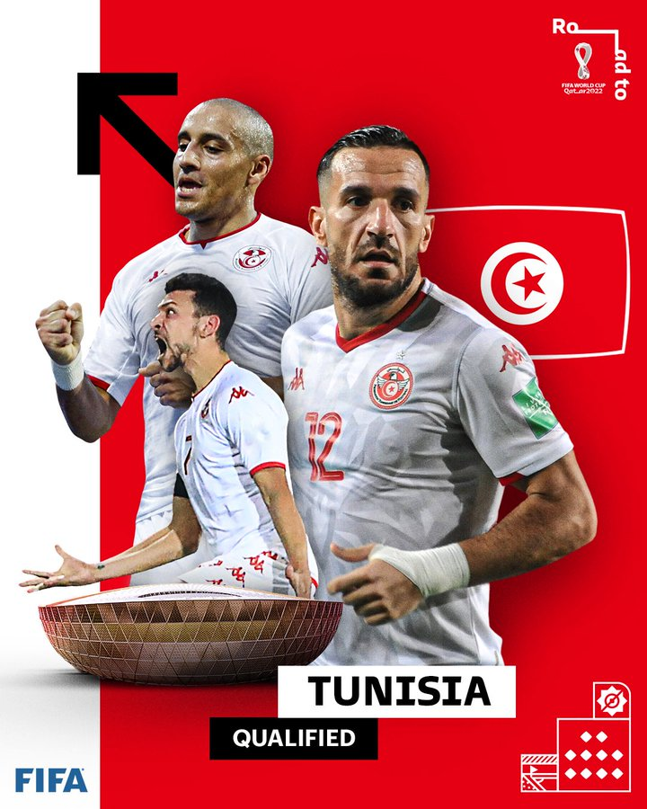

Meilleur joueur
WAHBI KHAZRI
Porteurs des rêves de 12 millions de Tunisiens, les Aigles de Carthage espèrent faire de leur sixième campagne mondialiste un événement inoubliable.
L'équipe de Tunisie de football est l'équipe nationale qui représente la Tunisie dans le football international masculin, depuis qu'elle a disputé son premier match le 2 juin 1957 contre la Libye. Membre depuis 1960 de la FIFA au niveau international et de la Confédération africaine de football au niveau continental, ainsi que de l'UAFA depuis 1978 et de l'UNAF depuis 2005, elle est supervisée par la Fédération tunisienne de football, fondée le 29 mars 1957, après l'indépendance de la Tunisie.
Les Tunisiens abordent leur sixième Coupe du Monde. Lors de leur première participation en 1978, ils sont entrés dans l'histoire en étant la première équipe africaine à remporter un match en phase finale. Leur performance conduira à une augmentation du nombre de places réservées au continent mère.
Après leur entrée en lice victorieuse sur le Mexique 3-1 grâce à des buts d'Ali Kaabi, Nejib Ghommidh et Mokhtar Dhouieb, ils ont encaissé une défaite aux mains de la Pologne et un nul face à l'Allemagne pour terminer à un point des places qualificatives.
Une éclipse de 20 ans a suivi, durant laquelle de nombreuses autres sélections arabes et africaines ont laissé leur marque en Coupe du Monde. De retour à France 1998, les Aigles de Carthage se sont inclinés devant l'Angleterre et la Colombie, avant d'arracher un nul 1-1 à la Roumanie.
Ils ont ensuite pris part à Corée/Japon 2002 et à Allemagne 2006, enchaînant trois éditions consécutives pour la première fois de leur histoire, mais ont quitté le tournoi dès le premier tour dans les deux cas. Ils ont fini lanterne rouge de leur groupe en 2002 et n'ont évité le même sort en 2006 qu'à la faveur d'une différence de buts légèrement supérieure à celle de l'Arabie Saoudite.
Ils ont de nouveau disparu des radars pour renouer avec la scène mondiale en 2018. Ils ont enregistré leur première victoire depuis 1978 en Russie, avant de concéder deux défaites contre la Belgique et l'Angleterre qui les ont, encore une fois, privés d'une qualification pour la phase à élimination directe.
WAHBI KHAZRI
Wahbi Khazri, né le 8 février 1991 à Ajaccio, est un footballeur international tunisien évoluant actuellement au poste de milieu offensif ou d'attaquant au Montpellier HSC.
Formé au SC Bastia à partir de 2004, Khazri y fait ses débuts professionnels en 2009 et devient rapidement un homme fort de l'équipe avec qui il connaît successivement la montée de National en Ligue 2 en 2011, puis de Ligue 2 en Ligue 1 en 2012. Il quitte le Sporting en 2014 et passe deux saisons sous les couleurs des Girondins de Bordeaux. En 2016, il tente l'expérience à Sunderland en Premier League ; sa première saison est moyenne et il est prêté au Stade rennais lors de l'exercice 2017-2018. Sa bonne saison à Rennes (11 buts en 29 rencontres) attire l'attention de l'AS Saint-Étienne qui le recrute en juillet 2018.
Wahbi Khazri est par ailleurs le co-capitaine de l'équipe de Tunisie, dont il a porté le maillot à 74 reprises pour 25 buts depuis 2013 et avec laquelle il a joué la Coupe du monde 2018 et la Coupe du monde 2022.
"J’aimerais souligner l’attitude, l'engagement défensif collectif et la volonté de se battre sur chaque ballon qu’a fait la Tunisie contre le Danemark. C’est la base d’une équipe compétitive. »
« Je pense qu’on devrait prendre de la hauteur et ne pas poser de réclamation ! La Tunisie mérite sa victoire , laissons-leur cette joie et cette victoire de prestige contre les champions du Monde aux tunisiens ! Prenons de la hauteur Didier Deschamps ! »
« Les Tunisiens méritent amplement cette victoire, la réclamation n’a pas lieu d’être. La Tunisie mérite et ça fait plaisir pour eux. C’est une victoire de prestige, on a pas à leur enlever cette victoire, on espère que la France ne pose pas de réclamations. »

« Jouer face à des milliers de supporters tunisiens ne nous fait pas peur. Nous avons auparavant déjà joué lors des barrages au Pérou, en amical en Honduras et j’ai joué personnellement en Turquie, j’ai connu la ferveur de la Super League
Il y’a d’autres choix sans doutes possibles, Khazri est rentré au dernier match, est-ce qu’il jouera ? Voilà … la Tunisie a un objectif, clair pour espérer continuer la compétition. Nous aussi … voilà donc c’est dur pour qu’il y’ait deux équipes heureuses à la fin du match. »